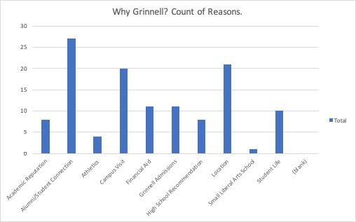

Why Grinnell: A Historical Inquiry
By Noah Daniel and Philip Kiely
HIS 295.02 | Purcell | Fall Semester 2018

Introduction
Each year millions of students around the world go to college, many of whom are stepping foot on campus for the first time. The decision of which college to attend is a momentous one, and as Jacquelyn Warwick and Phylis M. Mansfield point out, “the major types of risks that consumers perceive” when making decisions such as what school to pick include functional risk, physical risk, financial risk, social risk, psychological risk, and time risk. Though these categories will be discussed more in detail later, it is immediately apparent that choosing a college contains tremendous amount of risk. Still, whether it be for financial reasons, the location of the school, or as in Maria Walinski-Peterson’s case, an innate “homing beacon” that switched on and told her to “go to Grinnell” with no apparent reason, there are numerous motivations that drive these new college students to select the schools that they do despite major risks associated with the decision. When analyzed as a group, the reasons why students select a college not only reveal each student’s own preferences, but also valuable information about the schools themselves.
Through Digital Grinnell, Grinnell College has recorded oral interviews of 148 alumni to “better understand and share the history of Grinnell College.” Along that stated purpose, the Alumni Oral Histories afford us the opportunity to gain an initial understanding of why those alumni chose to attend Grinnell College decades ago, and their initial perceptions of the institution compared to other schools. This project takes these oral histories and analyzes them in order to find over-arching themes in why these alumni selected Grinnell and whether or not those reasons had anything to do with the distance they travelled to matriculate at Grinnell. Results of our analysis will also be broken into decades as the alumni oral histories span Grinnell College graduation classes from 1943 to 2007, in addition to distance categories, to determine if the alum’s hometown’s distance from Grinnell College or temporal distance from the present correlated with the reasons why they selected Grinnell. Digging into the alumni oral histories of those who attended a self-proclaimed “global” school serves the dual purpose of identifying over-arching themes of why students have chosen Grinnell College out of countless schools, as well as also demonstrating how the identity of Grinnell has evolved over the past seven decades.
Location of Origin for 86 Grinnell Alumni
Potential Bias and Limiting Factors
The dataset and analysis methods introduce the possibility of bias to and limit the scope of our results. The participants in the alumni oral histories hosted by Digital Grinnell not only willingly chose to participate in the interviews, but also made the conscious decision to come back to Grinnell College for class reunions, where the interviews were conducted. That the interviewees had to come back to Grinnell to participate in the oral histories means that international students are underrepresented because, assuming they moved back out of the country upon graduation, the trip back to campus is much more difficult. These decisions further imply that those who did interview feel fairly strong connections to Grinnell College.
However, these probable deep ties to Grinnell do not necessarily impact the question we seek to answer. This project endeavors to determine the overarching reasons for the choices made by the alumni to attend Grinnell. These motivations may also help us understand how applicants historically understood and perceived Grinnell. Given these questions, the answers are probably not swayed by the experiences while at Grinnell since the decision to come to Grinnell was made prior to these experiences.
That some of the alumni who were interviewed graduated as early as the 1940s also complicates research; though reasons why they choose Grinnell are given, it could be possible that hindsight is factoring into their statements. There is no true way to account for this, so we are required to take their word and hope that their strong connection to Grinnell are not clouding their memories of why they choose Grinnell College.
Another limiting factor in terms of how representative our data set is in exemplifying reasons why all students choose Grinnell is the number of complete cases available. There are 154 alumni interviewed in Digital Grinnell, some of which were conducted in joint interviews, but there were only 86 that gave all of the information needed for this study: Class Year, Place of Origin (the alumnus’ hometown, where they went to high school), and Reasons Why (a categorical classifier of why the alumnus said they chose to attend Grinnell). Despite the size of our data set, our findings strongly align with existing secondary literature on the topic at a broader scale.
Research Categories
The categories of reasons why Grinnell was chosen for our initial, direct analysis of the alumni oral histories was created based off the stated reasons. Reasons that were similar are placed into the same category, and every reason given fit into one of these nine categories. The categories for analysis are:
- Financial Aid – The college’s financial support or affordability was a cited factor in the alumni’s decision.
- Alumni/Student Connection – A personal connection, such as a friend or family member, attended Grinnell.
- Academic Reputation – The college’s academic standards, course offerings, or competitiveness was a cited factor in the alumni’s decision.
- Athletics – The alumni came to Grinnell for the opportunity to play a varsity sport.
- Campus Visit – The campus visit experience influenced the alumni’s decision to choose Grinnell.
- Grinnell Admissions – The Grinnell Admissions office proved to be the deciding factor due to its advertisements, outreach, or acceptance of the alumni as a non-traditional candidate.
- High School Recommendations – A high school counselor or friends at high school recommended Grinnell, which was a deciding influence.
- Location – Location of Grinnell, including the weather, was a deciding factor.
- Student Life – The culture of Grinnell, including being a small school, an activist school, and no Greek life being present, was a deciding factor.
Some alumni listed two reasons when explaining why they choose Grinnell; we account for both of these reasons as choosing a college is a complex decision. As each alumnus identified at most two factors, the percent for each category will be fairly low, but an alumnus not choosing a particular category does not indicate that said category was not a factor, rather, it was not a primary factor. From here, the study will go on to demonstrate how origin of the alumni as well as their graduating year factor how they answered the question “Why Grinnell?”
Analysis
Without dividing the alumni into groups based on their class years or distance, the most popular reason overall was Alumni/Student Connection, with Location and Campus Visit rounding out the top three reasons. But what about when we divide the alumni based on their wide range of origins. Are the top three reasons still going to be the same? To answer this, alumni were divided into categories based on their hometown or high school’s distance from Grinnell: 1-200 Miles, 201-800 Miles, and 800+ Miles.
Distance Category 1 (1-200 Miles) (13 Records)
| Reason | Percent | Count |
|---|---|---|
| Financial Aid | 31% | 4 |
| Alumni/Student Connection | 23% | 3 |
| Campus Visit | 23% | 3 |
| Academic Reputation | 15% | 2 |
| Student Life | 15% | 2 |
| Location | 15% | 2 |
As Distance Category 1 Table displays, for those the closest to Grinnell, the reasons are fairly spread out. Financial aid (31%) is remembered as what drove their decision with a connection to alumni or current students (23%) and campus visit (23%) tying for a close second. This suggests that the alumni in this distance category did not care so much about the location of the school as they did about how affordable the school was and how much they know about the college through connections. There are much fewer alumni in the oral histories from this distance category compared to the others, so it would be interesting to see how and if the reasons why they chose Grinnell would change with twice as many data points. Still, it appears that student life and other reasons such as location did not factor much into the alumni’s decisions, most likely because they were from the area and had a good idea of what the culture and campus setting were like at the time.
Based on these reasons, it appears that those relatively close to Grinnell perceived the school to be one of financial means. With 31% stating Financial Aid as the most important reason, Grinnell was understood as a place that was affordable. Academic Reputation also came in at 15% so it is also highly likely that the alumni understood Grinnell to be academically rigorous.
Distance Category 2 (201-800 Miles) (33 Records)
| Reason | Percent | Count |
|---|---|---|
| Campus Visit | 30% | 10 |
| Alumni/Student Connection | 27% | 9 |
| Location | 21% | 7 |
| Financial Aid | 18% | 6 |
| High School Recommendation | 15% | 5 |
| Grinnell Admissions | 12% | 4 |
| Academic Reputation | 06% | 2 |
| Student Life | 06% | 2 |
| Athletics | 03% | 1 |
With 33 alumni stating their origins from 201-800 Miles away from Grinnell, the top reasons why they selected Grinnell shifted a bit. At 30%, the top reason is now Campus Visit, with Alumni/Student Connection following closely behind at 27%. The next two reasons are Location and Financial Aid, coming in at 21% and 18% respectively. For many from this category distance, a visit to Grinnell became the deciding factor. While some people from Distance Category 1 did not need to visit campus since it was so similar to where they lived, people from further away needed to visit the campus to make their decision.
That so many alumni in this distance category came to Grinnell because of an alumni or student connection suggests that Grinnell was perceived to be a good college to attend, or was at the very least familiar. Additionally, 18% of interviewees specified Financial Aid as the reason why. Just like with the first distance category, alumni who came from 201-800 Miles away understood Grinnell to be financially affordable thanks to aid. It is worth noting that 15% also declared some sort of High School Recommendation to be the reason why. Most of these High School Recommendations were from guidance counsellors, meaning that Grinnell was seen as an academically well suited for the prospective students.
Distance Category 3 (801+ Miles) (40 Records)
| Reason | Percent | Count |
|---|---|---|
| Location | 35% | 14 |
| Campus Visit | 22.5% | 9 |
| Academic Reputation | 20% | 8 |
| Grinnell Admissions | 17.5% | 7 |
| Student Life | 12.5% | 5 |
| Financial Aid | 12.5% | 5 |
| Alumni/Student Connection | 10% | 4 |
| Athletics | 05% | 2 |
| High School Recommendation | 02.5% | 1 |
Those coming from a distance of 801 miles or farther are arguably the most interesting group to look at. With 40 alumni in this distance category, the results are more complete than the other tables. In this group, 35% claimed that the location of Grinnell College was why they decided to come to school here. Often these alumni simply wanted to get away from home or their parents; they wished for independence during their formative college years. Many of those who selected Grinnell because of location also wanted to go to a school in a rural setting, often the opposite of where they came from. Campus Visit was the next most popular reason, coming in at 22.5%. This is an interesting statistic because it meant that many from far away had the means to visit Grinnell, which may also explain why Financial Aid was less important for this group (12.5%) compared to the other two Distance Categories. Academic Reputation (20%) was also important, people from far away did not want to travel thousands of miles just to attend an average school; they had to ensure that they would be attending a school that was academically worth the travel.
That many alumni in this distance category, regardless of their graduation year, picked Grinnell without visiting means that over time the alumni understood Grinnell to be in a rural setting; they did not need to go see the campus for themselves. However, at the same time Grinnell once again maintained its reputation as an academically competitive school. Unlike the first two distance categories, several alumni stated Student Life (12.5%) as a prominent reason because not only is it an activist school but also a bit of a culture shock; the means that Grinnell was perceived to be a place to come to experience something different while also gaining valuable knowledge.
There is an interaction in the dataset between the distance that an alumnus came and their class year. Members of the first distance category had a median class year of 1966, the second had a median of 1977, and the third had a median of 1985. This demonstrates how Grinnell College’s enrollment broadened geographically in the mid-twentieth century. However, it may mean that the different reasons that alumni chose Grinnell are determined by temporal distance as well as spatial distance.
1940s (2 Records)
| Reason | Percent | Count |
|---|---|---|
| Location | 50% | 1 |
| Academic Reputation | 50% | 1 |
| High School Recommendation | 50% | 1 |
Since the alumni who participated in the oral histories span graduating classes 64 years apart, the question of how graduating class factored into reasons why Grinnell was selected. Alumni were grouped into decades of graduating classes to answer this question. There are only two alumni from the 1940s who answered why they came to Grinnell. Location, Academic Reputation, and High School Reputation were each listed once. Not much can be said on the significance of these answers since two alumni cannot be seen as representative of their entire classes. Still, that Academic Reputation is listed means that Grinnell, even in the 1940s, was understood to be an academically challenging school.
1950s (9 Records)
| Reason | Percent | Count |
|---|---|---|
| Alumni/Student Connection | 44% | 4 |
| Campus Visit | 44% | 4 |
| Academic Reputation | 11% | 1 |
| Location | 11% | 1 |
| Student Life | 11% | 1 |
| Athletics | 11% | 1 |
With the 1950s decade containing 9 alumni who interviewed in the oral histories, the results are a little more credible, but still not as representative as they ideally would be. The top two reasons, both coming in at 44%, are Alumni/Student Connection and Campus Visit. In a time when attending college was still not an expectation, it makes sense that knowing someone who went or was currently attending Grinnell drove their decisions. Visiting campus was just as important for this group, suggesting these alumni had the capability to visit and distance was not a problem. In terms of how alumni perceived Grinnell as an institution during the 1950s, Academic Reputation was listed once, as was Student Life. Just like the 1940s, Grinnell maintained a solid academic reputation.
1960s (20 Records)
| Reason | Percent | Count |
|---|---|---|
| Financial Aid | 35% | 7 |
| Campus Visit | 25% | 5 |
| Academic Reputation | 15% | 3 |
| High School Recommendation | 15% | 3 |
| Location | 15% | 3 |
| Grinnell Admissions | 5% | 1 |
With 20 alumni graduating in this decade, the 1960s dataset has the most complete array of answers from Grinnell alumni. Financial Aid (35%) proved to be the most cited reason why Grinnell was chosen. That Financial Aid suddenly jumped to the top reason driving decisions to attend Grinnell is demonstrative of a broader theme at the time; during the 1960s, colleges steeply increased all costs of attendance. The costs (including tuition, room, board, and expenses) at University of Pennsylvania, another private school, rose to $2,770 from $1,284 a year. That is more than a $22,000 a year jump in 2018 dollars. Most likely, Grinnell instituted a similar cost increase, but was able to offset that new higher cost for some students with more substantial financial aid. Behind Financial Aid, Campus Visit and Academic Reputation came in at 25% and 15% respectively. Just as has been seen in previous decades, Grinnell retained a perception of a strong academic school.
1970s (15 Records)
| Reason | Percent | Count |
|---|---|---|
| Location | 40% | 6 |
| Student Life | 33% | 5 |
| Financial Aid | 20% | 3 |
| Academic Reputation | 20% | 3 |
| Campus Visit | 13% | 2 |
| Grinnell Admissions | 07% | 1 |
| High School Recommendation | 07% | 1 |
Alumni from the 1970s stated Location, at 40%, as their top reason why they selected Grinnell. That Location suddenly became the top reason could signal the increasing ability of students to travel farther away from home, whether that was due to more financial means or an increase in affordable travel methods. The appearance of Student Life as the second most listed reason, at 33%, also suggests that the culture of a school became more important than it had been previously; Grinnell was known as an activist school with diverse cultures and many saw this as an attractive feature. Additionally, whereas Financial Aid was the top reason in the 1960s, it dropped to third in the 1970s at 20%. This drop can also be explained by the historical situation regarding colleges and universities at the time. Not only did Congress create the Basic Opportunity Grant (an ancestor of today’s Pell Grants), but many universities began utilizing a standardized financial aid form, also a precursor to today’s Free Application for Federal Student Aid (FAFSA). Congress even passed the Middle Income Student Assistance Act in 1978, which “provide[d] grants and loans for middle class students and families.” With Congress suddenly introducing all sorts of Financial Aid for college students, it became less of a pressing issue, accounting for the drop of Financial Aid to the third most important reason in the 1970s. In terms of how Grinnell was perceived at the time, Academic Reputation remained important at 20%, but the image of an activist student body with diverse cultures became more prominent.
1980s (16 Records)
| Reason | Percent | Count |
|---|---|---|
| Location | 44% | 7 |
| Financial Aid | 25% | 4 |
| Student Life | 19% | 3 |
| Grinnell Admissions | 19% | 3 |
| Alumni/Student Connection | 12.5% | 2 |
| Campus Visit | 12.5% | 2 |
| Academic Reputation | 12.5% | 2 |
| High School Recommendation | 06% | 1 |
With 16 alumni graduating from the 1980s decade, Location remained the top reason at 44%. Even more interesting though is that Financial Aid once again became more influential, with 25%; this was likely due to the recession that occurred during the early 1980s. Though the U.S. economy rebounded fairly quickly, it likely left a strong impression on those about to commit serious funds towards a college education at the time . Student Life and Grinnell Admissions tied for the third most common reason, both at 19%. This suggests that not only did the culture at Grinnell remain important to prospective students, but that Grinnell admissions did well at sharing the culture at Grinnell along with its academic strengths. These two reasons also indicate that Grinnell was still perceived as having an activist student body and strong academics.
1990s (8 Records)
| Reason | Percent | Count |
|---|---|---|
| Grinnell Admissions | 50% | 4 |
| Alumni/Student Connection | 37.5% | 3 |
| Campus Visit | 25% | 2 |
| Academic Reputation | 12.5% | 1 |
Though it only has answers from 8 alumni, the 1990s illuminate possible greater themes of the time as well. For example, Grinnell Admissions jumped to the top stated reason why Grinnell was chosen at an overwhelming 50%. Even though it may just be a significant reason when looking at these 8 alumni, it could be that the Grinnell admissions team began using the internet to advertise Grinnell as the World Wide Web became popularly used during the 1990s. Alumni/Student Connection and Campus Visit both resurfaced as top three reasons for attendance, at 37.5% and 25% respectively. Maintaining the assumption that Grinnell admissions portrayed both the culture and academics of Grinnell, Grinnell seemingly was still understood as an activist school with competitive academics.
2000s (16 Records)
| Reason | Percent | Count |
|---|---|---|
| Campus Visit | 44% | 7 |
| Location | 31% | 5 |
| Athletics | 12.5% | 2 |
| Grinnell Admissions | 12.5% | 2 |
| Alumni/Student Connection | 12.5% | 2 |
| Financial Aid | 06% | 1 |
| Academic Reputation | 06% | 1 |
The alumni graduating in the 2000s, with 16 respondents giving complete answers, listed Campus Visit, at 44%, as their top reasons why they chose Grinnell. Location came in as the second most influential reason at 31%. Seemingly, the location and feel of the campus became much more important for those who graduated in the 2000s. Interestingly, for the first time Athletics reached the top three reasons at 12.5%, although it was tied with Grinnell Admissions and Alumni/Student Connection. With college athletics continuing to became more prominent both in the United States and on Grinnell’s campus, students were more interested in the opportunities to play varsity Division III sports. It is worth noting that Financial Aid fell to a meager 6% despite college costs remaining extremely high; the drop may be explained by prospective students and their family becoming desensitized to the costs of college. Another explanation is that those interviewed simply did not have to worry about the costs, whether it was because they expected scholarships or came from a wealthy background.
Broader Understanding
According to Warwick and Mansfield, two established authors when it comes to research about the college selection process, there are six risk categories associated with the process:
- Functional Risk – Whether or not the school will perform as expected
- Physical Risk – The risk to self and others that the school may pose, including the location of the school
- Financial Risk – Whether or not the school is worth the cost, as well as if it is affordable
- Social Risk – Whether or not the school will lead to social embarrassment due to not fitting in with student life and the community
- Psychological Risk – Whether or not the school will damage the student’s ego due to school reputation
- Time Risk – Whether or not time spent at school will be wasted if the school does not live up to its perception
For the purpose of this study, we did not use these categories when directly analyzing the data. However, we will be placing our results into these larger categories after our initial analysis to determine if the results of the Grinnell College Alumni Oral histories, despite the lack of full data, are representative of existing scholarly beliefs. We will also be dropping the Time Risk category due to the strong connection that our data set feels towards their experience at Grinnell College.
Warwick and Mansfield found that the most prominent risk categories why students chose the college that they did were Financial Risk, Functional Risk, and Psychological Risk; the means for these three risk categories were 4.42, 4.30, and 4.06 respectively. These results suggest that students were most concerned about the affordability of the school and whether or not the school will be worth the substantial cost. Not far behind was Functional Risk, or whether or not the school will perform as expected in terms of academics, professors, and degrees offered. Psychological Risk related to whether or not attending a certain school would damage the students’ ego. Both Functional Risk and Psychological Risk indicate that the reputation of a school is very important when selecting a college.
Complete Results Graph

So how exactly did Grinnell compare to the results of Warwick and Mansfield’s study? As can be seen above, of the 121 different reasons why the Grinnell alumni picked Grinnell that were given, the most popular reason was Alumni/Student Connection at a count of 27. Though it does not explicitly relate to one risk category, it is similar to two categories: Functional Risk and Social Risk. One of the reasons a prospective student may expect the school to perform in a certain way is because they knew or know someone that attends there. If this is a correct assumption, then our results are in line with Warwick and Mansfield’s. However, Alumni/Student Connection could also be put into the Social Risk Category, the least important reason according to Warwick and Mansfield, where the prospective students are concerned about fitting in.
The second most popular reason, by number of times stated, of Grinnell alumni was Campus Visit. Campus visit fits into the Social Risk category of Warwick and Mansfield Study as references to Campus Visit often discussed how the alumni felt truly comfortable on campus. So, while this was the second most stated reason in the available Grinnell alumni oral histories, it is the third most important risk factor for Warwick and Mansfield’s study. That the top three reasons in Warwick and Mansfield’s research are very similar to the results of this examination reveal that the themes of why student’s select specific colleges are likely to extend across colleges and are dependent on the opinions of those making the decision. Unfortunately, the results cannot be stated to be the same for these two studies because the categories are not exactly the same. In order to be certain that the themes are significant, categories would have to be made the same and the Grinnell alumni would have to select a one of the specific risk categories in their interviews.
The results of another study by Amber L. Stephenson, Alex Heckert, and David B. Yerger further support our claims. For Stephenson, Heckert, and Yerger, the study was limited to 15,000 students at one public university, but according to the authors, the results are consistent with other existing research. The four most important factors were the image/reputation of the school, the cost, location, and availability of major. Just like Warwick and Mansfield, and our study with Alumni/Student Connection factored in, the reputation of a school is extremely important. Even more, the location of the school, which a campus visit supports, is crucial in influencing a decision. The campus environment, which includes the location and extremely important campus visits is significant as well. Warwick and Mansfield’s Social Risk category relates to the campus environment, proving yet another link among the results. As in Warwick and Mansfield’s results, the cost of a school was most important; this is the largest difference between existing research and the results of the Grinnell alumni oral histories. While Financial Aid is important, with 11 references, it is not near the top of reasons. This could simply be due to the fact that we do not have a complete data set or that those who come to Grinnell are just not concerned with the cost of the school, which is unlikely considering the college’s high cost and the high proportion of students who receive financial aid. Regardless of this difference, there is no doubt that our research, despite the differing categories making for an indirect comparison, has produced similar results as two leading studies in this field of research.
Future Research
There is always room for more learning and improvement when it comes to research. The most obvious suggestion for future research on this topic, specifically regarding the Grinnell alumni oral histories, is to complete this study with a full data set. Only 86 of 154 alumni gave complete answers, making this analysis unclear if this is representative of all of Grinnell alumni. Asking specific questions about each alumnus’ hometown and reasons for choosing Grinnell in every future alumni interview would give a future version of this study more complete and representative data. Another recommendation is to apply categories that match those used in existing research. Also, while comparing results with existing secondary research, it would be helpful to have a similar timeframe; the Grinnell alumni oral histories span alumni from 1943 to 2007 while the secondary research looks at students the same age. Despite these issues, this study still reveals that both distance from Grinnell, and historical contexts influenced the reasons why alumni chose to attend Grinnell College, as well as that Grinnell was historically perceived as a desirable place to attend college.
For More, See GitHub
text here
text here
Complete Bibliography
text here
text here
Ed Senn '79
“And I had professors that called and students that called and I think even Coach Obermiller called, and my first reaction was, “Oh, well, they really need the money,” and then I did the research on Grinnell and I was like, going, “No, they really don’t need the money and it’s a really good school.” So I applied and they offered me a financial aid package to make it the same price to go in-state in Virginia or to come to Grinnell.”
Cynthia Peterson McKeen '68
“I had an unusual experience as a prospective student coming to Grinnell, because I was on the Rock Island Line coming from Western Iowa, on the day that John F. Kennedy was shot… Everybody was in shock. Films were canceled, you know. The meetings I was going to have were pretty much canceled. So, I ended up talking to students for the time that I was there and I certainly turned around and went home much sooner than I normally would have. But it was an odd way to come here. I had visited the campus when my brother went to school here ten years before, so I was somewhat familiar with things and really wanted to go to school here, I suppose because of my brother liking it so well.”
Brenda Thomas '69, with Reed Hall.
Brenda Thomas '69 is pictured above with the women of Reed Hall. She sits at the far left of the middle row.
“I came to Grinnell because it seemed like the most inviting place. I felt like the person who interviewed me wanted me to come, and it offered an open Theater department, and... All I wanted to do was spend four years reading books. I love books. I love literature. I was so excited about spending four years doing something that I loved, and then maybe learning a little bit more about acting.”
Bill Parsons '62
“I came as a student in 1958, after I graduated from high school in Moline, Illinois. But I’d been on campus before that time because my sister graduated from Grinnell, and she was still a student, so I visited the campus to visit her. My father also graduated from Grinnell in 1924, so he had been there quite some time ago. But I’d heard stories about Grinnell and I was looking for a small, liberal arts college and I did apply to two of them and decided, after visiting both campuses, that Grinnell was where I wanted to go.”
James Ahrens '62, family in Grinnell in 1900.
Ahrens' family had lived in Grinnell for generations before he attended the college. Members of the Ahrens family posed for the pictured above in the town of Grinnell in 1900.
“I first started college at Iowa State College as it was known then, in 1958. I’d intended to go into science or engineering but I decided after the first year that I probably didn’t have the math skills to do that and so I decided to come back to Grinnell, and so I had no trouble getting into Grinnell as a transfer student, and coming back here. And I lived at home during the next one and a half years and was affiliated with Rawson Hall.”